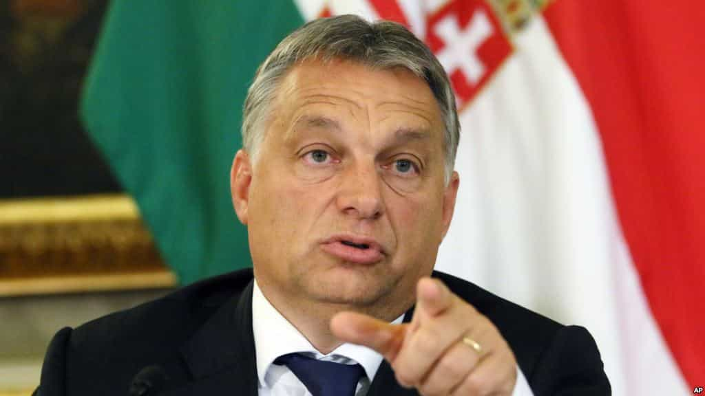
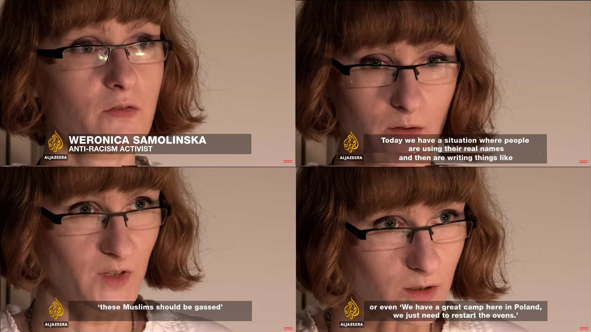

In June 2017, The European authorities released a statement announcing legal action against three European nations, Poland, Hungary and Czech Republic for not taking “the necessary action” in accepting migrants and refugees.
Merkel wanted her step-children to go and invade Eastern Europe to teach them tolerance. The three nationalist beer-drinking musketeers told her to fuck off. Now the lapdog Macron joins in with the threats. This will be one hell of a ride.
Why them and not others?
Contrary to Bulgaria for instance, who is as anti-migrant as our incriminated nations, Poland, Hungary and the Czech Republic (with Slovakia) stood together, governments and people, against the “””refugee””” quotas imposed on them from the start, setting an uncomfortable example of resistance against Merkel’s plan to convert Europe to Islam.
In cahoots with Merkel, globocuck Macron, being on the same (((payroll))) as his German colleague, announced before his presidential victory that he would support sanctions against countries of the Visegrad group if they refused to take in migrants in the foreseeable future.
This is exactly why childless people should not govern under any circumstances. They have no loyalty, no love towards their forefathers or notion of legacy.
The poisoned European apple
The Visegrad Group can be seen as the last chance of patriots in Western Europe to guarantee a stable power challenging the globalist authority of Brussels’ bureaucrats.
Make no mistake, the goal of the European Union, as dreamt by Kalergi, is division, replacement and the destruction of any kind of self-preserving government. Any renegade refusing to take in the Muslim hordes is a dissenter and will be attacked in one way or the other by the globalist death cult.
The likes of low T open borders advocate Martin Schultz are the ones tailoring those sanctions. The trees that hide the forest.
We yet have to see the side Ukraine will choose and if it will be on board with these policies as they are now almost in the pocket of the EU, after the big step taken in granting them visa-free travel in Europe while feeding their anti-Russian narrative.
In Poland, risks are that the decision of relocating migrants might fall on local mayors or voivodeship authorities (many of them from Platforma Obywatelska, center pro EU) instead of being lead by the PiS (conservative ruling party).
Their borders are still manned for now
First the Mohammedan hordes have to cross the border. They cannot do it without documents and a valid reason to enter. Visegrad nations’ border patrols are not as soft as Western Europe.
If globalist-controlled governments like France or Germany decide to give the migrants they host a Schengen visa, Poland would have no legal ground to refuse them. But that would challenge national sovereignty, something the Polish, Hungarian and Czech identity are riveted to and shit would hit the fan.
As Hungarian PM Viktor Orban declared…

EU is on the side of terrorists (…) As long as I am the Prime Minister of Hungary and stand here, so will the border fence on the southern border.
Orban has been painted as one of Brussels’ number one enemies after he reinforced his nationalist, anti-migrant stance and named the concealed maneuvers of Soros in Hungary and his screen societies supported by Brussels cucks, aiming at destroying national identity in Europe.
Migrants are not welcome there
Hope remains, counting on the ethnocentrism of Poles and the powerful presence of its anti-migrant and nationalist groups as we witnessed during the 2016 Warsaw Anti-Migrant Rally.
The decision of applying sanctions should take a few years at least to be organised (it is an unprecedented situation) and the cucks initiating it might hopefully be replaced. Poland and Hungary are much less “progressive” than the West. Welfare does not exist there, the locals possess a deeply rooted hate towards Muslims and violence is very likely to occur if Europe imposes migrants on those nations. Economic leeches would also be tempted to reach gibsmedat benefit havens such as Germany or Sweden instead.
The kind of benefits Germany gives MONTHLY to migrants just for turning up and doing fuck all
A large majority of people in the Visegrad area have all agreed to keep the same stance on that particular issue and will refuse categorically to let in any unvetted Muslim opportunists and so will their governments. If Europe uses threats or actual force, it will be a direct violation of the people’s right to enforce their national laws and things would kick off.
The bond of Visegrad, especially between Poland and Hungary is strong and has been tested by time. They are probably the closest allies in that part of the world. If one is attacked, the other will intervene. The saying goes…
Pole and Hungarian brothers be,
good for fight and good for party.
Both are valiant, both are lively,
Upon them may God’s blessings be
There is also a vivid hostility towards Muslims in all those nations that stems from history and the centuries of warfare they needed to free themselves of Middle Eastern expansion.
They also remember well the Soviet era and what it was like to leave under an authoritarian power that dictates your everyday life and wants to blend in your unique culture into a global ideology. Finally, they witnessed diversity, the gift that keeps on giving, with its trucks of peace and bombathons that blessed London, Paris or Brussels with self-inflicted enrichment.
Some examples from Hungarians, Poles and Czechs about their view of migrants:
After all my years there, I have yet to meet a Pole or a Magyar who would agree to let them in apart from a handful of anemic antifas and a few unfuckable strong and independent “women” from Warsaw (who fantasize about Abdul’s enrichment as it it the ideal way to get back at the Barteks who dumped them once they announced that they did not want children).

The kind of female anti-racist I am talking about. (Source Al-Jazeera)
If Visegrad does not cave in, the EU can’t really do anything apart from fines and economic sanctions. They would all rather have that a hundredfold than an Allah-worshipping human tide. We all remember the sanctions that the European Union imposed to Russia. The effect? Nothing. They carried on as they were. They need to apply the same mindset.
I think the freshest batch of cucks in charge of Brussels do not realise who they are dealing with here. Here is what the Polish PM had to say after the Manchester bombings and EU’s resolve to keep its gates open.
The press in those countries have not as much filters and censors trying to blame them for not respecting political correctness so people have the chance to stay informed.
Inhabitants of Visegrad countries have not been duped as much as their Western neighbours and see the approaching hordes as invaders, just like the ones they defeated in the past.
Un soutien de taille venu de l’Ouest
But Poles, Magyars and Czech might find and unexpected and valuable ally in the person of President Trump. Donald has a visit planned in Poland in July, where the possibility of Intermarium (a union project between Eastern European and Baltic nations spreading between three seas, started by the living nightmare of nationless Leftists, Jozef Pilsudski) will be discussed, with Andrzej Duda and Viktor Orbàn present.
Trump despises Merkel, Macron and their pro-migrant leanings, even if he has to remain courteous when meeting them. It does not start well for Macron’s policy to be approved by the U.S after the botched demonstration of “force” the globocuck tried on Trump by greeting him last at a recent summit…
Then, the manlet thought he was hardcore by using all his strength and crushing the hand of a 71 y.o man with a clenched jaw
The Don does not forget. His help will be useful in giving more credence to the Visegrad position.
Read More: 5 Things America Can Learn From Hungary’s Resistance Against The Migrant Masses


{kind=link}
{kind=link}